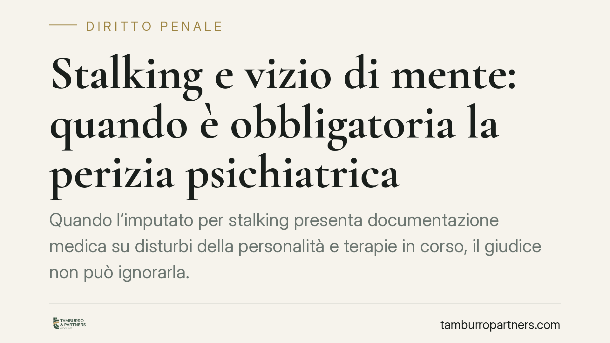

Stalking e vizio di mente: quando è obbligatoria la perizia psichiatrica
Quando l'imputato per stalking presenta documentazione medica su disturbi della personalità e terapie in corso, il giudice non può ignorarla. Secondo un recente orientamento di legittimità, scatta l'obbligo di disporre una perizia psichiatrica per accertare la capacità di intendere e di volere. Vediamo cosa cambia, con i dovuti riferimenti normativi e giurisprudenziali.

Il caso
La questione affrontata riguarda la condanna di un imputato per atti persecutori (art. 612 bis c.p.) ai danni dell'ex compagna. La difesa aveva prodotto documentazione del medico psichiatra curante, attestante disturbi della personalità e una terapia farmacologica in corso. Nonostante ciò, i giudici di merito avevano affermato la piena responsabilità senza disporre alcun accertamento tecnico.
*Nota redazionale: gli estremi della pronuncia citata nella fonte (Cass. pen. n. 9095/2026) recano una data futura e non risultano al momento verificabili. Il principio esposto in questo contributo riflette l'orientamento consolidato della Corte di Cassazione e va letto in quest'ottica, salvo conferma degli estremi specifici.*
Inquadramento normativo
Il codice penale distingue con precisione i diversi gradi di incidenza della condizione mentale sulla responsabilità.
L'art. 85 c.p. pone un principio generale: nessuno può essere punito se, al momento del fatto, non era imputabile, cioè capace di intendere e di volere.
L'art. 88 c.p. (vizio totale di mente) esclude l'imputabilità quando l'infermità ha fatto venir meno del tutto la capacità di intendere e di volere. L'art. 89 c.p. (vizio parziale) prevede invece una diminuzione di pena quando la capacità era solo grandemente scemata, ma non annullata. L'art. 90 c.p. chiarisce infine che gli stati emotivi o passionali, di per sé, non escludono né diminuiscono l'imputabilità.
Sul punto è essenziale richiamare le Sezioni Unite (Cass. SU n. 9163/2005, sentenza Raso): anche i disturbi della personalità, e non solo le patologie psichiatriche in senso stretto, possono incidere sull'imputabilità, a condizione che siano di consistenza, intensità e gravità tali da compromettere in concreto la capacità di intendere e di volere, e che sussista un nesso con il fatto commesso.
Sul piano processuale, l'art. 220 c.p.p. disciplina la perizia come strumento di accertamento che richiede specifiche competenze tecniche. Quando la verifica sulla capacità dell'imputato impone valutazioni cliniche, la perizia non è un'opzione facoltativa rimessa alla discrezionalità del giudice, ma lo strumento necessario per decidere su basi tecniche e non su impressioni.
Il principio affermato
In presenza di documentazione medica seria, che attesti un quadro patologico potenzialmente rilevante, il giudice non può liquidare la questione con una motivazione apodittica. Deve confrontarsi con quegli elementi e, se necessario, disporre la perizia ex art. 220 c.p.p. La mancata attivazione dell'accertamento, a fronte di indici concreti di infermità, integra un vizio di motivazione che espone la decisione all'annullamento.
Attenzione però a un punto spesso frainteso: la pronuncia non afferma che l'imputato affetto da patologia sia automaticamente non punibile. Afferma soltanto che la sua condizione va accertata con rigore tecnico. L'esito della perizia può confermare la piena imputabilità, riconoscere il vizio parziale o, nei casi più gravi, quello totale.
Implicazioni pratiche
Per la difesa, il messaggio è chiaro: la documentazione sanitaria va prodotta tempestivamente e in modo circostanziato, perché è la premessa per attivare l'obbligo di accertamento peritale.
Altrettanto importante è il profilo della tutela della persona offesa. L'eventuale riconoscimento di un vizio di mente non lascia la vittima priva di protezione. Anche quando l'imputato sia dichiarato non imputabile o parzialmente imputabile, l'ordinamento prevede l'applicazione di misure di sicurezza (ad esempio il ricovero in strutture apposite o la libertà vigilata) quando sussista la pericolosità sociale. L'accertamento della malattia, dunque, non si traduce in impunità né in assenza di controllo.
Cosa fare in concreto
- Raccogliete subito cartelle cliniche, certificati dello psichiatra curante e prescrizioni farmacologiche riferite al periodo dei fatti.
- Formulate un'istanza motivata di perizia psichiatrica ex art. 220 c.p.p., indicando gli elementi concreti che rendono non manifestamente infondata la questione sull'imputabilità.
- Verificate il nesso temporale tra la patologia documentata e la condotta contestata: è il profilo decisivo secondo le Sezioni Unite Raso.
- Se siete persona offesa, non interpretate l'eventuale perizia come un indebolimento della tutela: valutate con un legale le misure di protezione attivabili.
- Impugnate la decisione che ignori senza adeguata motivazione la documentazione medica prodotta, deducendo il vizio di motivazione.
Contributo informativo a cura di Tamburro & Partners Avvocati - Avv. Giuseppe Tamburro. Non costituisce parere legale.
Ogni condominio ha una storia a sé.
Se gestisci un'amministrazione e vuoi un confronto su una specifica questione condominiale, scrivi allo studio. Ti rispondiamo entro un giorno lavorativo.